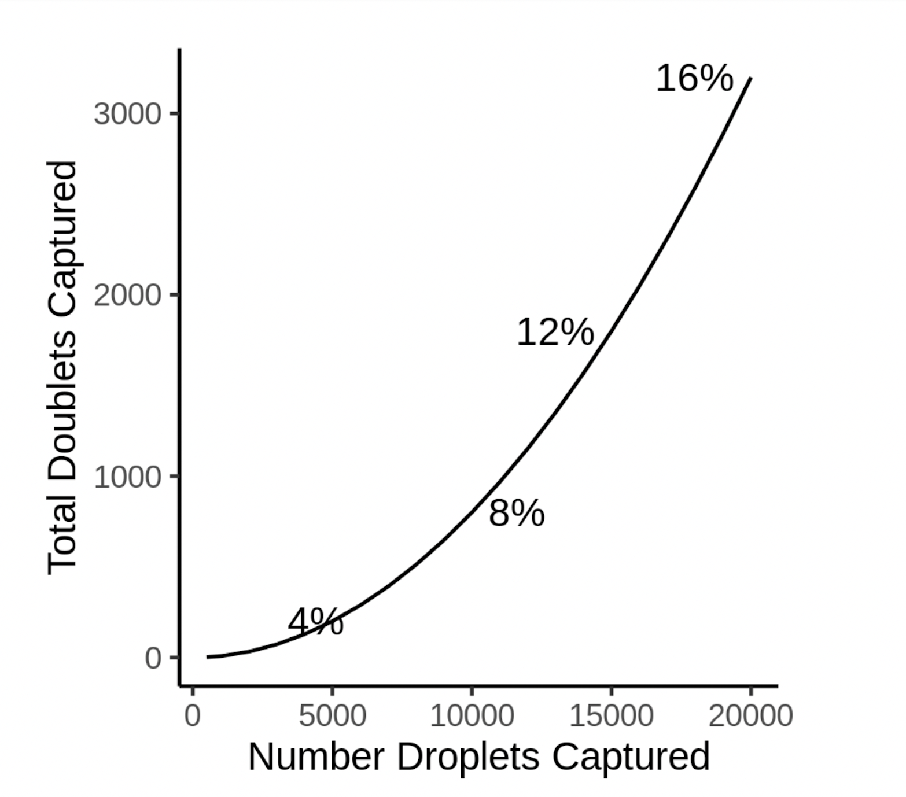

Technical artifacts in data when two (or more) cells are mistaken as a single cell are known as “doublets”. Inflation in rate of doublets is a major
bottleneck, limiting cell throughput and leading to incorrect biological inferences.
Multiplexing multiple different samples together is a highly useful method to increase single cell RNA-seq capture throughput. As more cells captured, the percent of doublets increases.
You can use this calculator to help estimate the expected percent of droplets that are doublets and the numbers of doublets and singlets based on the number of droplets captured.
This can be helpful to help with experimental planning and for post-capture quality control processing.

Please let us know if there are additional features that you think will help make this tool useful.